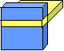
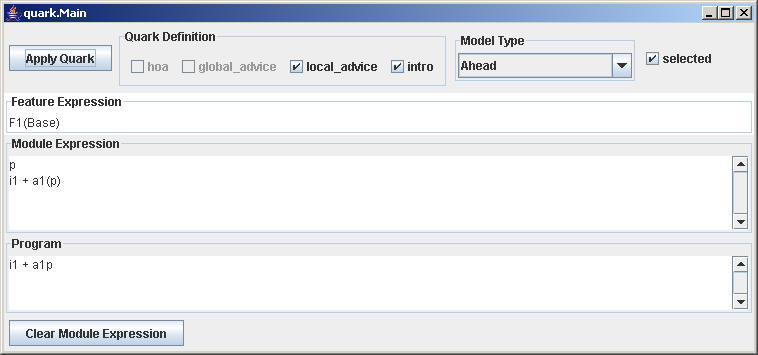
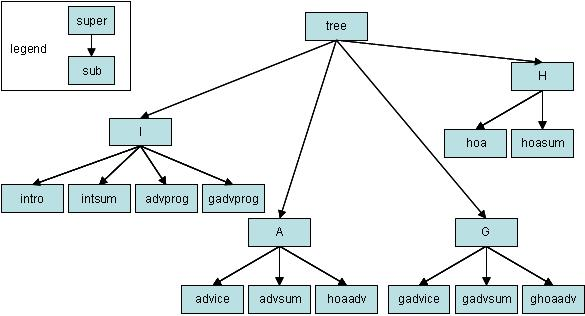

|  |
The quark Tool |
The quark tool was designed to illustrate the different ways in which module expressions are composed in different program synthesis paradigms. Four paradigms are considered: Ahead, AspectJ, Aspectual Mixin Layers++ (a generalization of Aspectual Mixin Layers that has pointcuts advising multiple pieces of advice), and General (a generalization of the previous three). The capabilities -- supporting, introductions, local (bounded) advice, global (unbounded) advice, and higher-order advice (hoa) -- of each of these models is tabulated below.
| introductions | local | global | hoa | |
| Ahead | x | x | ||
| AspectJ | x | x | ||
| Aspectual Mixin Layers++ | x | x | x | |
| General | x | x | x | x |
An ultimate goal of this work is to show a general theory of program synthesis that unifies aspects, ahead refinements, and aspect refinements. It is based on a staged meta-programming approach: the changes a feature makes to a program will be defined by a quark, an n-tuple of terms. The theory will tell us how to weave (transform) each term of a quark into a program. The quark tool illustrates a two-level algebra: at the top level are feature expressions. These expressions are then transformed into module expressions, which implement introductions, advice, and higher-order advice. Once the feature expression of a program is defined, a module expression for it is synthesized. This expression is then evaluated to produce a module expression for the generated program. This is an example of staged meta-programming: a feature expression generates a module expression, which then is evaluated to generate a program.
Invoking Quark |
quark has no parameters. It is invoked from the command line by:
> java quark.Main
The quark.jar file should be on your classpath.
A Tour |
The quark tool screen is shown below, along with a labeling of its key panels:

A feature is defined by a quark. A quark is a 4-tuple that may consist of an introduction, local advice, global advice, and a higher-order advice (hoa). Different model types offer a subset of these terms. You can select the model that you want to use in the Mode Type drop-down menu.
To the right of the Model Type, you can select which terms will be in a particular quark. In the above figure, a quark has both local advice and introductions. By clicking on term checkboxes, you can customize the contents of a quark.
The selected checkbox to the right of the Model Type sets whether any or all terms are selected in a quark by default.
When you click the Apply Quark button, the quark you specified is woven into a program. Initially, you have a program called Base which is modeled by the module expression 'p'. The figure above shows what happens after Apply Quark has been clicked: a local advice is woven into p and an introduction is added. The Feature Expression panel shos the feature expression -- in this case, its feature F1 (which consists of local advice and an introduction) has been woven into Base. Each time you click Apply Quark, you are applying a new feature to the expression in the Feature Expression panel. The corresponding module expression is shown below in the Module Expression panel, and a pseudo evaluation of the module expression is shown in the Program panel. Note that the Module Expression panel actually shows a list of expressions, where the bottom-most expression is the most recent module expression produced. (This allows you to see the sequence of transformations that have been applied). You can start a new computation by clicking the Clear Module Expression button.
Note that the order of quark term weaving is:
Notation:
Have fun!
Implementation Notes |
The quark tool generates module expressions in the following grammar:
I : intro :: intro
| intro + I :: intsum
| A(I) :: advprog
| G(I) :: gadvprog
;A : advice :: advice
| advice . A :: advsum
| H[A] :: hoaadv
;G : gadvice :: gadvice
| gadvice . G :: gadvsum
| H[G] :: ghoaadv
;H : hoa :: hoa
| hoa * H :: hoasum
;
Each pattern (right-hand side of a production) has a name, indicated by the ::name tag. When a production is recognized, an instance of a class with the pattern's name is instantiated. So an expression (intro + intro) is a tree rooted by an intsum object, whose left and right arguments are intro objects. All productions are instances of the class tree. A class diagram, which is derived from the above grammar, is shown below:

There are 4 different transformations that can be applied to a tree:
Notice that i, a, g, and h are names of terms. In
reality, an introduction can be replaced with a sum of introductions, an
advice can be replaced with a composition of advice, etc. In addition to
the above methods that transform (weave) module expressions, there are two
additional functions:
Notation for expressions is simple. Here are some examples:
The programs that are produced by the above expressions are trivially evaluated:
Copyright © Software Systems Generator Research Group.
All rights reserved.
Last modified:
02/04/2006